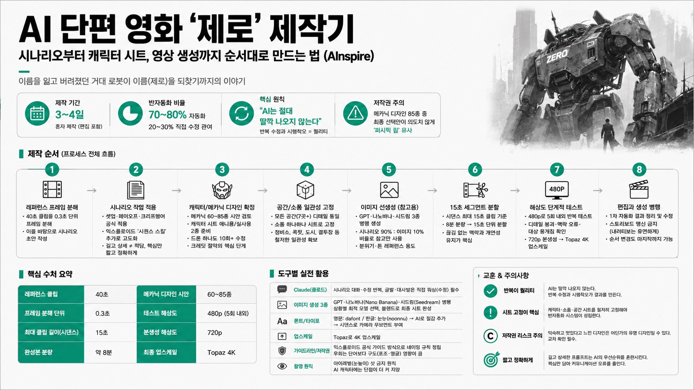

AInspireMORNING DIGEST · 2026-08-01 · AInspire🎬 영상
AI 단편 영화 '제로' 제작기 — 시나리오부터 캐릭터 시트, 영상 생성까지 순서대로 만드는 법 (AInspire)
AI 단편 영화 채널 AInspire가 2주 전 공개한 메카닉 단편 '제로(가제: 거신)' 제작기를 강의 요약본으로 공개하는 튜토리얼. 40초 레퍼런스 클립을 0.3초 단위로 프레임 분해해 시나리오의 뼈대로 삼고, 드라마 파트에서 쌓은 시나리오 작법(셋업·페이오프·크리프행어)에 익스플로이드의 '시퀀스 스킬'을 더해 고도화한 뒤, 캐릭터 시트·소품·공간을 철저히 고정하고 나서야 이미지를 프롬프트 참고 자료로만 활용해 480p 테스트→720p 본생성→Topaz 4K 업스케일 순으로 진행하는 실전 워크플로우와, 메카닉 디자인이 의도치 않게 '퍼시픽 림'과 유사해진 저작권 실수담을 함께 다룬다.

01핵심 개요
항목
내용
채널/작품
AInspire, AI 단편 영화 '제로'(최초 가제: 거신/거철) — 2주 전 공개된 본편의 제작기 튜토리얼
핵심 주제
이름을 잃고 버려졌던 거대 로봇이 이름(제로)을 되찾기까지의 이야기
제작 기간
강의 공개용으로 3~4일이라는 시간 제약 속에서 혼자 제작 (편집 포함)
핵심 원칙
"AI는 절대 딸깍 나오지 않는다" — 반복 수정과 시행착오가 곧 퀄리티
자동화 비율
이전 편(반자동화 실패) 대비 이번 편은 약 70~80% 반자동화, 20~30%는 직접 수정 관여
저작권 주의
메카닉 디자인 85종 중 최종 선택안이 의도치 않게 '퍼시픽 림' 주인공 기체와 유사
02핵심 내용 구조 — 제작 순서(프로세스 전체 흐름)
레퍼런스 프레임 분해: 최초 40초 클립을 0.3초 단위로 프레임 분해해 이를 바탕으로 시나리오를 함께 작성.
시나리오 작법 적용: 드라마 파트에서 배운 셋업·페이오프·크리프행어 공식을 신(scene)별로 요청에 녹여 시나리오를 고도화. 여기에 익스플로이드에서 당시 최신 나온 '시퀀스 스킬'을 추가 적용해 드라마 파트보다 더 정교한 시나리오를 작성. 이번 프로세스로 얻은 교훈은 "무조건 길고 상세하게 쓰는 게 능사가 아니다" — 너무 길면 AI가 우선순위를 헷갈려 결과물이 왜곡됨. 짧지만 커뮤니케이션 오류를 줄이는 핵심 요소만 넣는 것이 중요.
캐릭터/메카닉 디자인 확정(가장 중요한 단계): 메카닉 디자인만 60~85종 시안을 받아 검토. 크레딧을 가장 많이 절약할 수 있는 파트이자, 캐릭터 시트를 얼마나 고도화하느냐가 영상 품질을 가르는 핵심. 캐릭터 시트는 애니메이션용·실사용 두 버전을 각각 준비하고, 드론 디자인 하나에도 10회 이상 수정을 거침.
공간/소품 일관성 고정: 인부가 떨어지는 장소, 결투 장면, 정비소, 전투 후 복귀 도시, 악당 지휘 장소, 파일럿 콕핏 등 등장 공간 전부를 하루~이틀씩 공들여 디테일하게 통일. 소품 하나하나까지 시트로 고정해야 반자동화 시스템이 성립.
이미지 선先생성 → 참고자료로만 사용: GPT·나노바나(Nano Banana)·시드림(Seedream) 세 모델로 시나리오상 모든 신의 이미지를 먼저 뽑되, 이 이미지를 그대로 시댄스(Seedance)에 넣지 않음. "캐릭터 시트와 시나리오 90%, 이미지는 분위기·톤 참고용 10%" 비율로 시나리오에 의존해 진행하는 것이 핵심.
15초 세그먼트 분할: 시댄스의 최대 클립 길이가 15초이므로, 완성된 8분 분량 시나리오를 15초 단위로 쪼개 끊기지 않는 자연스러운 맥락과 개연성을 유지하도록 연출. 가장 많은 시간을 절약할 수 있는 노하우로 강조.
해상도 단계적 테스트: 480p로 5회 정도까지 디테일 붕괴 여부·맥락 오류·대상 뭉개짐을 충분히 테스트 후, 720p로 본생성. 이번 작품은 전부 720p로 뽑은 뒤 Topaz에서 4K로 업스케일.
편집과 생성 병행: 1차 자동화로 뽑은 이미지·영상을 정리하며 수정 지점을 유연하게 재구성. 스토리보드는 절대 맹신하지 않고(광고 영상은 예외, 내러티브 영상은 비추천), 순서 변경도 마지막까지 유연하게 적용.
03핵심 워크플로우 — 도구별 실전 활용
시나리오 대화: Claude(클로드)와의 세션 대화 기록을 별도로 캡처해 초안→디테일 수정을 반복. AI가 주는 "글발·대사발"은 아직 부족하다고 판단해 반드시 직접 워싱(수정)함.
이미지 생성 3종 병행: GPT, 나노바나, 시드림을 항상 함께 돌려 그때그때 가장 잘 나오는 모델을 채택(예: 크리처 디자인은 GPT가 유독 잘 뽑아준 사례). 얼굴 고도화는 GPT 6번째 출력본과 나노바나 6번째 출력본을 블렌드해 확정 시트로 완성.
그림체 레퍼런스: 베르세르크, 아키라 등 선호 화풍을 레퍼런스로 가져와 10회 이상 반복 수정.
폰트/타이포: 영문은 dafont(다폰트), 한글은 눈누(noonnu)에서 무료 폰트를 받아 1차 레이아웃 후 AI로 질감(텍스처) 추가, 이후 시댄스로 카메라 무브먼트 부여.
업스케일: 최종 영상은 Topaz로 4K 업스케일.
저작권/가이드라인 우회: NSFW 등 플랫폼 가이드라인 저촉을 피하기 위한 네이밍 규칙을 익스플로이드 공식 가이드 방식으로 만들어 Claude와 작업 시 오류를 방지. 우회는 단어보다 구도(포즈·앵글)의 영향이 크다는 점을 이번 제작에서 확인. 저작권 관련해서는 "익숙하고 멋있다고 기억하는 이미지"가 실은 어디선가 본 유명 디자인의 재현일 수 있으므로 반드시 교차 확인 권장.
아이레벨(눈높이) 샷 금지 원칙: 실사 촬영·연예인 소재라면 아이레벨이 유리하지만, AI 캐릭터에는 단점이 더 크다고 판단해 강의에서 아이레벨 샷 자체를 금지.
04활용 시나리오
개인 단편 영화/숏폼 내러티브 제작: 스토리보드에 얽매이지 않고 캐릭터 시트·시나리오 중심으로 반자동화 파이프라인을 구축하려는 1인 창작자.
AI 영상 저작권 리스크 관리: 메카닉·크리처처럼 레퍼런스가 풍부한 장르에서 디자인 유사성 문제를 사전에 교차 검증하고 싶은 제작자.
크레딧(생성 비용) 절약 전략 수립: 480p 저해상도 반복 테스트 → 고해상도 본생성 순서로 실패 비용을 줄이려는 실무자.
AI 에이전트(Claude 등)와의 협업 프로세스 설계: 저작권/가이드라인 우회 규칙을 룰로 정리해 에이전트에 학습시켜 반복 오류를 줄이려는 경우.